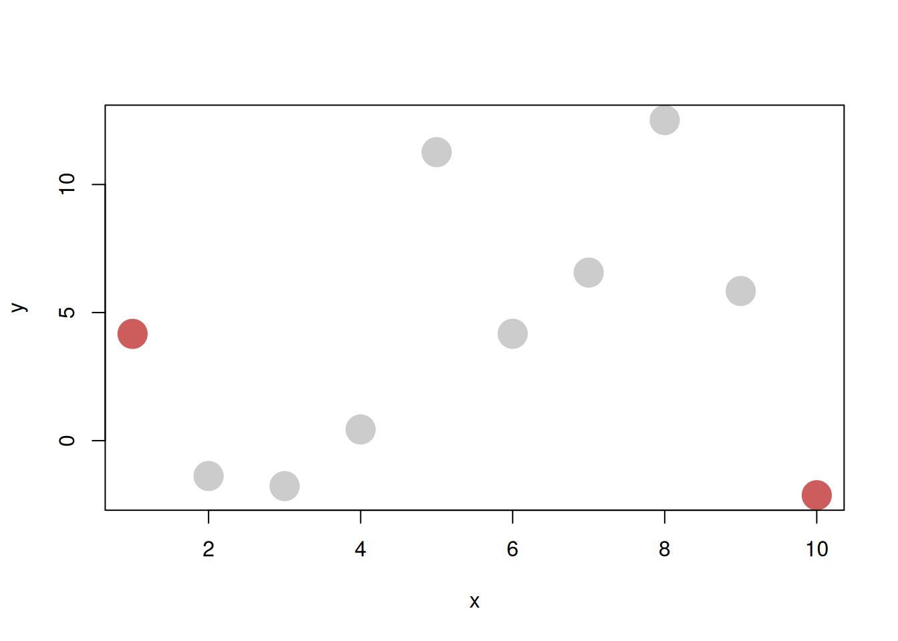
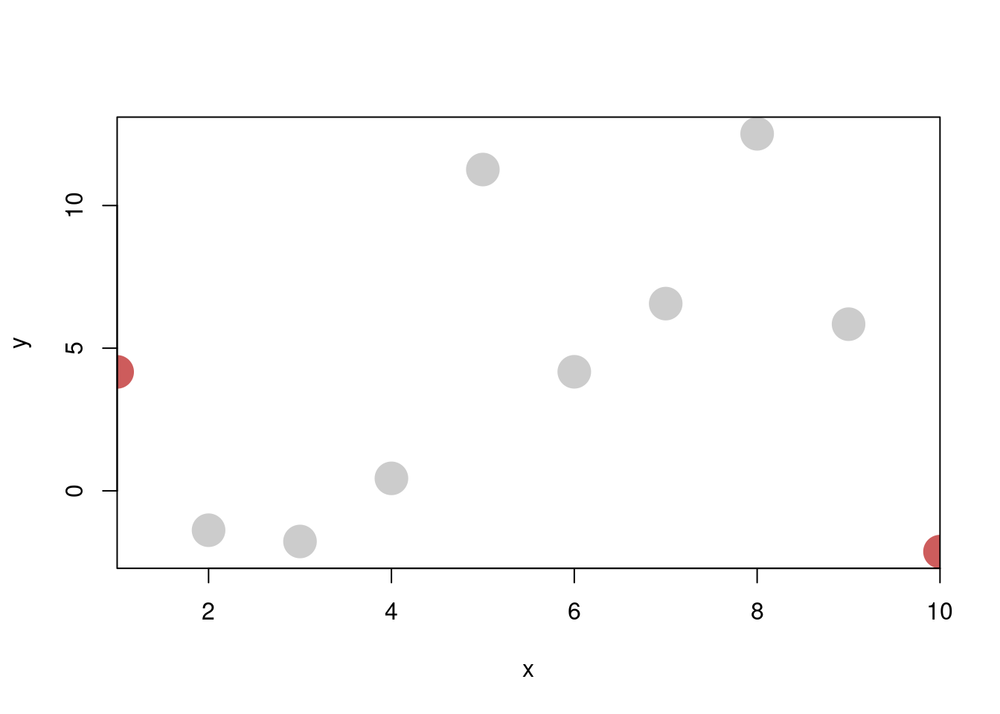

4 System description
This section contains a description of the concrete system implementation (plotscape and plotscaper).
4.1 Core requirements
The system needs to be able to:
- Split the raw data into a hierarchy of parts
- Compute summary statistics on the parts
- Further transform these summaries in a way that respects the hierarchy (e.g. stacking, normalizing by parent values)
- Translate these summaries into visual attributes such as x- and y-position, width, height, area,…
- Render geometric objects based on the visual attributes
- Do all of the above reactively, in response to user input
4.2 Components
This section contains a detailed listing of the system’s components.
4.2.1 Indexable
As discussed in Section 3.3, when it comes to representing data, the column-based model offer several advantages over the row-based model. In this model, data is stored in a dictionary of contiguous arrays (as in, for example, a CSV file). Thus, the fundamental unit of data is the column, a fixed-length array of values.
However, at times, it may be useful to have additional flexibility. Specifically, it may be useful to include in our definition of a “column” not only fixed-length arrays but also constants and callbacks.
This is where the Indexable<T> type comes in. It represents a single “column” of data, and is just a union of three primitive types:
In plain words, an Indexable<T> can be one of three things: a constant of type T, an array of T, or a callback that takes an index and returns a T. To extract values from Indexable<T>, we use a generalized form of subsetting by an index, which is implemented differently for each type. First, if the value is an array, we subset it using the usual square bracket notation. Second, if the value is a constant, we always return it regardless of the index (we can think of the value as being repeated across all rows). Third and finally, if the value is a callback, then we call it with the index and simply take the returned value. A uniform interface for doing this generalized form of subsetting is provided by Getters.
The advantage of the Indexable<T> type is that, while the raw data will typically come in the form of arrays, there are many places further down the data visualization pipeline where constants and callbacks are convenient. For example, in a typical barplot, the base of the y-axis is set to a constant value, typically zero. While we could hypothetically append a new array filled with zeros to the rendering data, it is more convenient and memory efficient to instead use a constant (0) or a thunk (() => 0). As another example, often, if we have an array of repeated values, it may be convenient to instead represent it as an array of underlying unique values and an array of indices (similar to R’s factor class). We can then use a callback which takes an index and returns a position in the array of unique values.
4.2.2 Getter
A Getter<T> is a function which takes an Indexable<T> as an argument and returns a new function, which, when given an index, returns a value of type T. For illustration, here is a slightly simplified implementation:
// Getter.ts
export type Getter<T> = (index: number) => T;
export namespace Getter {
// Constructor
export function of<T>(x: Indexable<T>): Getter<T> {
if (typeof x === `function`) return x;
else if (Array.isArray(x)) return (index: number) => x[index];
else return () => x
}
}we can then create and use Getters like so:
import { Getter } from "./Getter"
const getter1 = Getter.of([1, 2, 3])
const getter2 = Getter.of(99);
const getter3 = Getter.of((index: number) => index - 1);
console.log(getter1(0));
console.log(getter2(0));
console.log(getter3(0));## 1
## 99
## -1Note that, by definition, every Getter<T> is also automatically an Indexable<T> (since it is a callback (index: number) => T). This means that we can create new getters out of other getters.
The Getter namespace also includes several utility functions. One example is Getter.constant which takes in a value T and returns a thunk which always returns T (i.e. () => T). This is useful, for example, when T is an array and we always want to return the whole array and not just a single indexed element. Another utility function is Getter.proxy, which takes a Getter and an array of indices, and returns a new Getter which proxies the access to the original values through the array of indices:
import { Getter } from "./Getter"
const proxyGetter = Getter.proxy([`A`, `B`, `C`], [2, 1, 1, 0, 0, 0]);
console.log([0, 1, 2, 3, 4, 5].map(proxyGetter))## [ "C", "B", "B", "A", "A", "A" ]The Getter.proxy function becomes particularly useful when implementing Factors.
4.2.3 Reactive
Reactive is a fundamental mixin that is used throughout the system. It is essentially just an implementation of the Observer/EventEmitter pattern.
4.2.4 Dataframe
Another fundamental data structure is a Dataframe. A Dataframe is just a record of Indexable values:
In this way, a Dataframe is essentially just a SoA with a bit of extra flexibility. Specifically, while in typical SoA data structures, all properties are usually arrays, in Dataframe they are instances of the Indexable type, so they may also be constants or functions. For example, the following is a valid instance of a Dataframe:
const data: Dataframe = {
name: [`foo`, `bar`, `baz`],
age: 99,
canDrive: (index: number) => index < 1
}The fact that the “columns” of a Dataframe can be constants and functions is useful, for example, when want every row to contain the same value (e.g. 0 for the base of a barplot), or when we want the value be lazily computed based on other values. This is also where the SoA representation offers a unique advantage: to achieve the same behavior in AoS layout, we would have to have a copy of the value or function pointer in every row.
Dataframe should always contain at least one array and all arrays in a Dataframe should have the same length. This is because some operations are impossible if we do not know the length of the Dataframe (the number of rows). For example, when rendering a scatterplot, how do we decide how many points to draw if the x- and y-positions have length 19 and 20, or if they are both constants? Thus, at least of one the dataframe’s columns needs to have a fixed length (i.e. have an underlying array) and there should not be multiple different lengths.
In the current version of the system, these fixed-length constraints are not enforced via a static check (such as during a constructor call), but are instead checked dynamically during runtime, whenever the integrity of a dataframe’s length becomes a key concern (using utility functions such as Dataframe.checkLength). This is the case, for example, when initializing a Scene or when rendering.
I found the dynamic fixed-length checks to be the better option, for several reasons. First, they allow us to represent data as a plain JavaScript object (POJO) rather than having to instantiate a class. Second, due to JavaScript’s dynamic nature, this approach is also safer: if, during runtime, the user adds a property to a Dataframe which violates the fixed-length constraints, this approach will catch the error. Third, and finally, for any data sets with typical dimensionality (more rows than columns, \(p << n\)), the tiny performance hit that may be incurred due to having to loop through the columns to find the length dynamically will be minuscule compared with the computational cost of looping through the data set’s rows and doing work such as rendering or computing statistics. For high-dimensional datasets (\(p >> n\)), we could always extend the system to memoize the length/number of rows on the Dataframe object (although then we may lose the security of the dynamic runtime checks).
4.2.5 Factor
When visualizing data, we often need to split our data into several disjoint parts and compute summaries on these parts. Together, these parts forms a partition of the data, and these partitions may be organized in a hierarchy, such that one or more parts in a child partition “add up” to a part in the parent partition.
A Factor provides a way to represent such data partitions, as well as the associated metadata. In this way, it is similar to base R’s factor S3 class, although there are some differences. It has the following interface:
interface Factor<T extends Dataframe> extends Reactive {
cardinality: number;
indices: number[];
data: T
parent?: Factor;
}The cardinality of a factor represents the number of unique parts (indices) that the partition the factor represents has. For example, if the factor represents boolean partition of the data into two parts, the cardinality will be 2, if it represents a partition of the data into three parts (e.g. "A", "B", and "C"), the cardinality will be 3, if it represents a partition of the data between all countries in the world, the cardinality will be 195, and so on. Technically, the same information as cardinality is implicitly represented in the array of indices, however, for some operations, it is useful to be able to access cardinality directly instead of having to loop through indices to find the number of unique values each time.
Indices represent the actual assignment of cases (rows of the data) to the parts. For example, the array of indices [1, 0, 1, 1, 2] represents the first, third, and fourth case being assigned to part two, the second case being assigned to part one, and the fifth case being assigned to part three (keeping in mind JavaScript’s zero-based indexing). As was mentioned above, the number of unique values in indices has to match the factor’s cardinality, and the length of indices has to match the number of rows of the data that the factor partitions.
A factor may have metadata associated with each part, which stored in the data property of type Dataframe. This is a departure from base R’s factor class, which represents all metadata as the vector of levels. For instance:
## [1] (0,5] (0,5] (0,5] (0,5] (0,5] (5,10] (5,10] (5,10] (5,10] (5,10]
## Levels: (0,5] (5,10]In my system, the same information would be represented as:
const factor: Factor = {
cardinality: 2,
indices: [0, 0, 0, 0, 0, 1, 1, 1, 1, 1],
data: {
binMin: [0, 5],
binMax: [5, 10],
},
};There are several reasons why it may be better to store Factor metadata in tables (Dataframe) as opposed to vectors. First, when partitioning data, we often want to associate several pieces of metadata with each part. For example, if we cut or bin some numeric variable, like in the example above, we want to store both the lower and upper bound of each part’s bin. We can store both pieces of information as a single element (tuple) in an array/vector, the way that cut does it, however, this works well with only few pieces of metadata: once we start storing longer tuples, it becomes hard to tell what each tuple element represents. We could alleviate the problem by naming the tuple elements, but then we are essentially storing the metadata in an array of dictionaries, i.e. the AoS data structure. We can do better by storing the metadata in a table. Second, if we store metadata in tables, it will be easier to combine when we take a product of two or more factors. Since taking the product of multiple factors is a fundamental operation in an interactive data visualization system, underpinning operations such as linked brushing, it makes sense to use data representation which makes it convenient.
There are several types of factors which differ semantically but are represented by the same underlying Factor data type. What differs are the constructor functions that are used to create these factors, and are exported by the Factor namespaces. These will be discussed in the following subsections.
4.2.5.1 Bijection factors
Factor.bijection is the first of two trivial factor constructors. It assigns each case its individual part, such that the cardinality is simply equal to the number of cases. When we create a bijection factor, we need to specify the length of the data (the number of cases) it represents to create the array of indices. Technically, this is not strictly necessary: we could implement indices as a callback which simply takes an index and returns it (an indentity function). However, since the primary use of factors is for summarizing data, and we need to know how many data points to summarize, we do still need to store the length of the data somewhere. I found it convenient to simply create a dummy array of indices, as opposed to having to store a separate length property.
Factor.bijection can also have associated metadata.
Thus, the function signature of Factor.bijection is simply:
4.2.5.2 Constant factors
Constant factors, or Factor.mono, are the polar opposite of bijection factors. They assign all cases of the data to a single part (thus, the label function is a constant function, hence the name). The constructor signature is the same as for bijection factor, so I will omit it here.
4.2.5.3 String factors
If we have an array of values which are either strings or objects that can be coerced to strings (using the .toString() method), we can turn this into a factor, and treat two values as the same factor level if the underlying string representations are the same. This is the basis of Factor.from.
The metadata associated with Factor.from simply contains an array of labels.
4.2.5.4 Binned factors
Factor.bin takes an array of numeric values and partitions them among a number of (typically equal-sized) bins. As such, serves as the fundamental building block for histograms.
The constructor signature is the following:
function bin(
array: number[],
options: {
breaks?: number[];
nBins?: number;
width?: number;
anchor?: number;
},
): Factor<{ binMin: number[]; binMax: number[] }>;If breaks are provided, the constructor function uses those to construct the histogram. Otherwise it uses nBins, width, and anchor to determine the breaks, in the corresponding order of importance.
Factor.bin produces metadata associated with the histogram bins, that is, the minimum and the maximum of each bin. That is, the result has the following shape:
4.2.5.5 Product factors
A fundamental operation that we need to be able to do with factors is to take their Cartesian product. That is, when we have two factors of same length, each with its corresponding array of indices, we need to be able to take the indices, combine them element-wise, and create a new factor that will have as its cardinality the number of unique pairwise combinations of indices.
For example, take two factors represented by the following data:
If we take their product, we should end up with the following factor:
Notice that the cardinality of the new factor (\(4\)) is greater than that of either of the two constituent factors (\(2\), \(3\)) but less than then their combined product (\(2 \cdot 3 = 6\)). This will be generally case: if the first factor has cardinality \(i\) and the second cardinality \(j\), the product of the two factors will have cardinality \(k\), such that:
- \(k \geq i\) and \(k \geq j\) (equality only if one or both of the factors are constant)
- \(k \leq i \cdot j\) (equality only if all element-wise index combinations are unique).
I’ve used a formula similar to one discussed in (Wickham 2013):
\[i_{\text{product}} = i_1 + i_2 \cdot \max(j, k)\]
4.2.7 Scales
To visualize data, we need to be able to translate values from the space of the data to the space of the graphical device (computer screen). In most data visualization systems, this is done by specialized components called scales or coordinate systems (see e.g. Murrell 2005; Wickham 2016; Wilkinson 2012). Scales serve as a bridge between what we have (data) and what we see (visual attributes), allowing us to cross from one domain to the other.
There exists is a fair research on the theoretical properties of scales and how they relate to the mechanisms of visual perception (see e.g. Krzywinski 2013; Michell 1986; Wilkinson 2012; Stevens 1946). However, when it comes to applying this knowledge and implementing scales in concrete data visualization systems, a lot less information is available. And, even when such information is available, it is it is often quite high-level of abstract (for some rare counter-examples, see e.g. Murrell 2005; Ziemkiewicz and Kosara 2009). Thus, the following section is based largely on how scales have been implemented in existing data visualization codebases, such as the ggplot2 R package (Wickham 2016) or d3-scale module of D3 (Observable 2024; also used by Vega Satyanarayan et al. 2015), as well as on personal insights gained while implementing the package.
4.2.7.1 Overview
From a high-level perspective, a scale is just a function \(s: D \to V\) which translates values of the data \(d \in D\) to values of some visual attribute \(v \in V\), such as the x- and y-position, length, area, radius, or color (Wilkinson 2012). This function may or may not be invertible, such that, at times, each value of the visual attribute may be identified with a unique data value (but this is not always the case).
One of the most common and typical cases is a scale where both \(D\) and \(V\) are subsets of the real numbers:
\[s: [d_{min}, d_{max}] \to [v_{min}, v_{max}] \qquad d_{min}, d_{max}, v_{min}, v_{max} \in \mathbb{R}\]
For example, suppose our data takes values in the range from 1 to 10 and we want to plot it along the x-axis, within a 800 pixels wide plotting region. Then, our scale is simply:
\[s_x: [1, 10] \to [0, 800]\]
Now, there is an infinite number of functions that fit this signature. However, one particularly nice and simple candidate is the following function:
Definition 4.1 (Simple linear mapping) \[s(d) = v_{max} + \frac{d - d_{min}}{d_{max} - d_{min}} \cdot (v_{max} - v_{min})\]
if we substitute the concrete values into the formula, this becomes:
\[s_x(d) = 0 + \frac{d - 1}{10 - 1} \cdot (800 - 0) = [(d - 1) / 9] \cdot 800\]
The function acts on the data in the following way:
- \(s_x(1) = (1 - 1) / 9 \cdot 800 = 0\)
- \(s_x(10) = (10 - 1) / 9 \cdot 800 = 800\)
- \(s_x(d) \in (0, 800)\) for any \(d \in (1, 10)\)
That is, the function maps the data value 1 to pixel 0 (left border of the plotting region), value 10 to to pixel 800 (right border of the plotting region), and any value in between 1 and 10 inside the interval 0 to 800, proportionally to where in the data range it is located.
It is relatively simple to translate the formula in 4.1 to code:
// simpleScale.ts
export function simpleScale(
d: number,
dmin: number,
dmax: number,
vmin: number,
vmax: number,
): number {
return vmin + ((d - dmin) / (dmax - dmin)) * (vmax - vmin);
}And indeed, this function works the way we would expect:
import { simpleScale } from "./simpleScale.ts"
console.log(simpleScale(1, 1, 10, 0, 800))
console.log(simpleScale(5.5, 1, 10, 0, 800))
console.log(simpleScale(10, 1, 10, 0, 800))## 0
## 400
## 8004.2.7.2 Limits of modeling scales as simple functions
Simple scale functions like the one above can work fine for basic data visualization systems. However, once we begin adding more features, this design becomes prohibitive. Consider, for example, what happens if we want to:
- Expand the scale limits
- Scale discrete data
- Apply non-linear transformations
- Pan, zoom, reverse, reorder, or otherwise modify the scale interactively
Let’s take the first point as a motivating example. Consider what happens to data points at the limits of the data range under the simple linear mapping:
x <- 1:10
y <- rnorm(10, 0, 5)
col <- ifelse(1:10 %in% c(1, 10), "indianred", "grey80")
plot(x, y, col = col, cex = 3, xaxs = "i")
The plot above shows values scaled using the simple linear mapping along the x-axis, that is, \(s: [1, 10] \to [0, 800]\) (effect of the xaxs = "i" argument). Notice that, since the position of the points representing the values 1 and 10 (highlighted in red) gets mapped to pixel values 0 and 800 (the left and right border of the plot), only half of each point is visible. This is quite undesirable - a fundamental principles of graphical integrity is that our graphics should not arbitrarily downplay or hide certain data points (Tufte 2001). The points at the axis limits are represented by only 1/2 of the area (or less, if at the limits of both axes), making them less salient, and this is especially pernicious since they are likely to be outliers.
To address this problem, most data visualization systems automatically expand the range of the domain by some pre-specified percentage:
# By default, the plot() function automatically expands the x- and y-axis
# limits by approximately 4% on each end, see `xaxs` in ?graphics::par
plot(x, y, col = col, cex = 3)
We could achieve similar effect by modifying the simple linear mapping we have defined above and adding an additional argument:
// simpleScale2.ts
export function simpleScale2(
d: number,
dmin: number,
dmax: number,
vmin: number,
vmax: number,
exp: number, // Extra argument
): number {
return (
vmin + (exp / 2 + ((d - dmin) / (dmax - dmin)) * (1 - exp)) * (vmax - vmin)
);
}Now, if we set the exp argument to some positive value, the scaled values get mapped closer to the center of the plotting region. For example, setting exp to 0.2 moves each of the data limits 10% closer to the center of the plotting region:
import { simpleScale2 } from "./simpleScale2.ts"
console.log(simpleScale2(1, 1, 10, 0, 800, 0.2));
console.log(simpleScale2(5.5, 1, 10, 0, 800, 0.2));
console.log(simpleScale2(10, 1, 10, 0, 800, 0.2));## 80
## 400
## 720However, notice that this argument is applied symmetrically. At times, we may want to apply a different margin to each end of the scale. We could solve this by adding two arguments instead of one, e.g. expLeft and expRight, however, at this point, the function signature starts to become unwieldy. If we have to call the function in multiple places, it may become difficult to remember what each individual argument represents. Further, note that by adding arguments, the logic inside the function’s body becomes denser and less readable. Finally, we may want to persist or modify some of the arguments during runtime (such as when panning or zooming). For all of these reasons, it may be a good idea to take a more structured approach and break the function down into several smaller components.
4.2.7.3 Solution: Two-component scales
The linear mapping formula in 4.1 can guide us in decomposing the scale function into smaller, more manageable parts. Let’s look at it again:
\[s(d) = v_{min} + \frac{d - d_{min}}{d_{max} - d_{min}} \cdot (v_{max} - v_{min})\]
If we look closely, we may be able to see that there are two parts to the function:
\[s(d) = \color{steelblue}{v_{min} +} \color{indianred}{\frac{\color{black}{d} - d_{min}}{d_{max} - d_{min}}} \color{steelblue}{\cdot (v_{max} - v_{min})}\]
That is, the linear mapping is composed of two simpler functions:
- \(\color{indianred}{n(d) = (d - d_{min}) / (d_{max} - d_{min})}\) takes a data value \(d \in D\) and maps it to the interval \([0, 1]\)
- \(\color{steelblue}{u(p) = v_{min} + p \cdot (v_{max} - v_{min})}\) takes a value in \([0, 1]\) and maps it to a visual attribute value \(v \in V\)
This leads us to the following definition of a scale:
Definition 4.2 (Scale as composition of two functions) A scale \(s\) can be created by composing:
- A normalize function \(n: D \to [0, 1]\), mapping data to the interval \([0, 1]\)
- An unnormalize function \(u: [0, 1] \to V\), mapping value in \([0, 1]\) to the visual attribute codomain
Such that:
\[s(d) = u(n(d))\]
Note that the terms normalize and unnormalize are arbitrary, however, I think they make for useful labels. They represent 1-D equivalent of vector normalization, mapping a value in the domain to and from a unit interval \([0, 1]\).
For the case of the linear mapping, we could rewrite this in code as follows:
// LinearMap.ts
export namespace LinearMap {
export function normalize(d: number, dmin: number, dmax: number) {
return (d - dmin) / (dmax - dmin);
}
export function unnormalize(p: number, vmin: number, vmax: number) {
return vmin + p * (vmax - vmin);
}
}import { LinearMap } from "./LinearMap.ts"
console.log(LinearMap.normalize(5.5, 1, 10))
console.log(LinearMap.unnormalize(0.5, 0, 800))
console.log(LinearMap.unnormalize(LinearMap.normalize(5.5, 1, 10), 0, 800))## 0.5
## 400
## 400This two component system allows for a clean separation of concerns. Specifically, the normalize function only needs to know how to map the data values to \([0, 1]\). It does not need to be aware of where these normalized data values will be mapped to. Conversely, the unnormalize function only needs to understand how to translate values from \([0, 1]\) to the space of the visual attribute (such as x-axis position).
4.2.7.3.1 Beyond linear maps
Another big advantage of the two-component scale system is that the functions \(n\) and \(u\) do not need to be a simple linear maps anymore. For example, suppose that our data \(D\) takes form of a set of discrete labels, such as \(D = \{ Prague, Vienna, Munich, Salzburg \}\). We can then replace \(n\) with a surjective function \(n: D \to [0, 1]\) such that:
\[n(d) = \begin{cases} 0.2 & \text{if } d = Munich \\ 0.4 & \text{if } d = Prague \\ 0.6 & \text{if } d = Salzburg \\ 0.8 & \text{if } d = Vienna \end{cases}\]
In other words, \(n\) will place values of \(D\) at equidistant points along \([0, 1]\), ordered alphabetically. We can implement this function in code as follows:
// PointMap.ts
export namespace PointMap {
export function normalize(d: string, dlabels: string[]) {
return (dlabels.indexOf(d) + 1) / (dlabels.length + 1)
}
}Since the codomain of \(n\) is still \([0, 1]\), we can compose it with a simple linear mapping \(u\) just as easily as before:
import { LinearMap } from "./LinearMap.ts"
import { PointMap } from "./PointMap.ts"
const labels = ["Munich", "Prague", "Salzburg", "Vienna"];
console.log(PointMap.normalize("Munich", labels));
console.log(LinearMap.unnormalize(PointMap.normalize("Munich", labels), 0, 800));
console.log(LinearMap.unnormalize(PointMap.normalize("Prague", labels), 0, 800));## 0.2
## 160
## 3204.2.7.3.2 Inverses
Additionally, another property of the two-component scale system that can be useful is that, if both \(n\) and \(u\) are invertible, then so is \(s\). That is, we can easily obtain the inverse scale function by inverting the definition from 4.2:
Definition 4.3 (Scale inverse) If a scale \(s\) is composed of invertible functions \(n\) and \(u\), then \(s\) is invertible:
\[s^{-1}(v) = n^{-1}(u^{-1}(v))\]
This is the case for the simple linear map: the normalize and unnormalize functions are actually inverses of each other:
import { LinearMap } from "./LinearMap.ts"
console.log(LinearMap.unnormalize(LinearMap.normalize(300, 0, 500), 0, 500))## 300However, the inverse may not always exist. In practice, this is often the case when the domain of the data \(D\) is smaller than the codomain \([0, 1]\). Take, for example, the discrete point mapping. Since \(D\) is finite but \([0, 1]\) has infinitely many values, there will always be some values in \([0, 1]\) that no \(d \in D\) maps to. For example, if \(D = \{ Munich, Prague, Salzburg, Vienna \}\) and \(Munich\) maps to 0.2, \(Prague\) maps to \(0.4\), and \(Salzburg\) maps to \(0.8\), then there are no cities which map to 0.9, 0.444, or 0.123456789. Conversely, if we get given those numeric values, then there is no obvious way to map them back to the cities.
One thing we can do is to replace the inverse/unnormalize function with a weaker form of inverse, called retraction (Lawvere and Schanuel 2009). Specifically, if we have a normalize function \(n: D \to [0, 1]\), then an unnormalize retraction \(u^*\) will have the property that:
\[u^*(n(d)) = d \qquad \forall d \in D\]
However, the converse doesn’t necessarily hold:
\[\neg \big[ n(u^*(v)) = v \qquad \forall v \in V \big]\]
For example, for the discrete point mapping, a retraction may map a value in \([0, 1]\) to the closest data value \(d \in D\):
// PointMap.ts
export namespace PointMap {
export function normalize(d: string, dlabels: string[]) {
return (dlabels.indexOf(d) + 1) / (dlabels.length + 1)
}
// Retraction - find the closest label
export function unnormalize(p: number, dlabels: string[]) {
const k = Math.round(p * (dlabels.length + 1) - 1)
return dlabels[k]
}
}
const labels = ["Munich", "Prague", "Salzburg", "Vienna"];
const [prague, munich] = ["Prague", "Munich"].map(x => PointMap.normalize(x, labels))
const midpoint = (prague + munich) / 2
// Helper function for stripping away floating point error
const strip = (x: number) => parseFloat(x.toPrecision(12))
console.log(`Midpoint between Munich and Prague: `, strip(midpoint))
console.log(`unnormalize(0.2999): `, PointMap.unnormalize(0.2999, labels))
console.log(`unnormalize(3): `, PointMap.unnormalize(0.3, labels))## Midpoint between Munich and Prague: 0.3
## unnormalize(0.2999): Munich
## unnormalize(3): PragueWhile inverses are always unique (Lawvere and Schanuel 2009; Fong and Spivak 2019), we may be able to come up with many different retractions for any given function. For example, with the discrete point map above, we could use the floor function instead of rounding and assign label to a value in \([0, 1]\) if it is less than the value of the normalized label (but more than the preceding labels).
The non-uniqueness of retractions presents a bit of a dilemma. How do we decide which retraction to use? And, if a certain retractive implementation of unnormalize returns a value, how do we decide if it is the “correct one”?
However, in practice, this is not much of a problem. While developing the package, I found that I’ve only ever had to use the unnormalize function with continuous data (LinearMap), and so the inverse was always well-defined. This is probably also why packages like ggplot2 and D3 can get by without this functionality. However, I still find it helpful to include the unnormalize function as a first class citizen (instead of it being relegated to some special case), both in terms of the mental model and also for debugging.
4.2.7.3.3 Some other remarks about the two-component scale system
It is worth noting that there is nothing inherently special about the interval \([0, 1]\) as the intermediate domain: any finite subset of \(\mathbb{R}\) would do. However, the interval \([0, 1]\) is convenient, both in terms of interpretation as well as for implementation, as we will see later.
Finally, so far I have discussed scales as functions: the scale function, the normalize function, and unnormalize function. Framing scales as composition of functions leads to a nice correspondence between the mathematical definition and the code. However, in practice, it may be more convenient to implement the domain and codomain as objects or classes, as we will also see in the following section. The important point is that, no matter how the two components are represented, each is responsible for translating values from/to its domain and the interval \([0, 1]\).
4.2.7.4 Past implementations of scales
Two-component scale systems such as the one sketched out above are fairly standard across data visualization libraries. For example, in D3 (Bostock, Ogievetsky, and Heer 2011), scales are implemented in a functional style, such that the data domain and the visual attribute codomain are passed as tuples or arrays of values to a higher-order scale* function (such as scaleLinear, scalePoint, or scaleBand), which then returns a new function that can be used for scaling. The domain and codomain can also be changed at a later point, by using the scale*.domain and scale*.range methods respectively (JavaScript functions are objects and can have other functions/methods attached to them).
For illustration, here is an example from the official documentation (Observable 2024):
const x = d3.scaleLinear([10, 130], [0, 960]);
x(20); // 80
const color = d3.scaleLinear([10, 100], ["brown", "steelblue"]);
color(20); // "rgb(154, 52, 57)"
// The domain and codomain can be changed after initialization
const y = d3.scaleLinear().domain([10, 130]); Internally, the scale* functions rely on other specialized functions to translate from its domain to the codomain (such as the normalize() and scale() functions for continuous and discrete/ordinal domains, respectively, and various interpolate() functions for codomains).
Similarly, in ggplot2 (Wickham 2016), scales are built upon the Scale class, with each subtype implementing limits and palette properties. The limits property is a vector which corresponds to the data domain and the palette property is a function which corresponds roughly to the visual codomain (the x- and y-position behave slightly differently, due to being transformed via coordinate systems). Internally, the package uses the rescale function from the scales package (Wickham, Pedersen, and Seidel 2023) to map data values to \([0, 1]\) and then the palette function is responsible for mapping these normalized values to the visual attribute. For illustration, here’s the full definition of the map method on the ScaleContinuous class (I’ve added comments for clarity):
map = function(self, x, limits = self$get_limits()) {
# Limits are just a tuple, rescale maps x to [0, 1]
x <- self$rescale(self$oob(x, range = limits), limits)
uniq <- unique0(x)
# Palette is a function which returns a vector of attribute values
pal <- self$palette(uniq)
scaled <- pal[match(x, uniq)]
ifelse(!is.na(scaled), scaled, self$na.value)
}4.2.7.5 Proposed model of scales
One feature that the models of scales that D3 and ggplot2 rely on is that they both treat the data domain and the visual attribute codomain as different types. In D3, fundamentally different functions are used to translate from \(D \to [0, 1]\) and from \([0, 1] \to V\), and in ggplot2, limits is a simple vector/tuple whereas palette is a function. While these approaches may have some benefits, such as perhaps offering greater flexibility, they also add additional complexity. Specifically, we have to use two different mental models: one when considering the domain and another when considering the codomain. Further, these models of scales only work in one direction: mapping values \(D \to V\). For going the the other way, i.e. mapping \(V \to D\), other specialized functions have to be used.
I propose a model of scales which implements both the domain and the codomain as components of the same type: Expanse. Fundamentally, this makes it so that the only difference between the data domain and the visual attribute codomain is which property of the scale they are assigned to.
Here is a (slightly) simplified version of the Scale interface:
D and V represent the data domain and the visual attribute codomain, respectively.
The two fundamental functions connected to Scale are:
function pushforward<D, V>(scale: Scale<D, V>, value: ValueOf<D>): ValueOf<V>
function pullback<D, V>(scale: Scale<D, V>, value: ValueOf<V>): ValueOf<D>The pushforward function pushes values forward through the scale, first through its domain and then its codomain, and the pullback function pulls values back, first through its codomain and then through its domain. The ValueOf type helper just identifies the type associated with the expanse’s data (e.g. number for a continuous Expanse, string for a discrete Expanse, etc…). I’ve omitted the generic type parameter constraint (<D extends Expanse, V extends Expanse>) for brevity.
Here is a simplified implementation of the two functions:
namespace Scale {
function pushforward<D, V>(scale: Scale<D, V>, value: ValueOf<D>): ValueOf<V> {
const { domain, codomain } = scale;
return Expanse.unnormalize(codomain, Expanse.normalize(domain, value));
}
function pullback<D, V>(scale: Scale<D, V>, value: ValueOf<V>): ValueOf<D> {
const { domain, codomain } = scale;
return Expanse.unnormalize(domain, Expanse.normalize(codomain, value))
}
}We can see that most of the work is done by the two Expanse components: we use domain to translates \(D \to [0, 1]\) and codomain to translate \([0, 1] \to V\). Scale only serves as plumbing, connecting the two together.
I argue that this model provides several benefits. First of all, it makes the code easier to reason about. Since both the domain and codomain are of the same type, we only need to keep a single mental model in mind. Second, if domain and codomain provide inverse functions (unnormalize), we get the inverse scale function \(V \to D\) for free (this is just the pullback function).
However, before we discuss Expanse, there are also some important functionalities that we may want to implement on Scale directly. There are two main reasons for this. First, we may want these functionalities to apply generally, across the various Expanse subtypes. Second, by implementing them on Scale, we can keep the Expanse interface cleaner. These general functionalities will be the subject of the next few sections.
4.2.7.5.1 Zero and one
Recall how in Section 4.2.7.2, we discussed the problem of expanding axis limits to display margins. Clearly, this is something that we also want to be able to do with our two-component scales. However, since we are designing an interactive data visualization system, we also want to be able to do more with axis limits: we want to be able to manipulate them dynamically during runtime, to implement features such as zooming and panning.
In Section 4.2.7.2, we solved the problem of expanding axis limits by adding an additional argument to the simpleScale function. However, as was discussed previously, this approach does not scale well for more featureful implementations of scales. So how should we go about implementing dynamic axis limits in the context of the two-component scale system?
Suppose we want to add margins to a scale where both the domain or codomain are continuous, such as the x-axis in a typical scatterplot. To implement margins, we could either expand the range of the data (the domain) or shrink the range of the visual attribute (the codomain). However, expanding the domain seems like a bad idea - this only works if the domain is continuous, and, clearly, we may want to add margins to discrete scales too, such the the x-axis of a barplot. Shrinking the range of the codomain could work (most visual attributes are continuous), however, we would need to implement some custom logic for when the plot gets resized. Also, by treating codomain differently than the codomain, we would be breaking away from our intention of representing both with the same generic Expanse type.
So what can we do? As was foreshadowed at end of the previous section, we can put the functionality for expanding axis limits directly onto Scale. Specifically, notice that any values passing through a scale are first converted to the interval \([0, 1]\) and then back to the space of either the domain or codomain:
\[D \to [0, 1] \to V\]
If we re-normalize these normalized values in \([0, 1]\), we effectively expand or shrink axis limits without having to touch either the domain or codomain. To give a metaphor, if we imagine Scale as a pipe connecting the domain and codomain, we can manipulate axis limits by stretching or squeezing this pipe, allowing more or less water to flow through.
To actually implement this, we can add two additional parameters to Scale, zero and one:
interface Scale<D extends Expanse, V extends Expanse> {
domain: D
codomain: V
props: { // A dictionary of properties
zero: number
one: number
}
}Now, we can use these two parameters to implement a new version of the pushforward function:
function pushforward<D, V>(scale: Scale<D, V>, value: D): V {
const { domain, codomain, props } = scale;
const { zero, one } = props
let normalized = Expanse.normalize(domain, value)
normalized = zero + normalized * (one - zero) // Re-normalize
return Expanse.unnormalize(codomain, normalized)
}The new function’s body is a bit more dense, however, the only real change is in the line with the comment. When we re-normalize, we scale the normalized value by the (zero - one) range and increment it by zero. In other words, zero tells us the proportion of the codomain range that the minimum data value gets mapped to, and one tells us the proportion of the codomain range that the maximum data value gets mapped to.
For example, suppose we set zero to 0.1 and one to 0.9. Then we have effectively implemented 10% margins on either side of the scale. If our scale has a \([1, 10]\) domain and \([0, 800]\) codomain, this will result in the following mapping:
- The “minimum” data value (1) gets mapped to 10% of the codomain range (80)
- Because
zero + 0 * (one - zero) = zero = 0.1
- Because
- The “maximum” data value (10) gets mapped to 90% of the codomain range (720)
- Because
zero + 1 * (one - zero) = one = 0.9
- Because
Note the quotation marks around the words “minimum” and “maximum” - there is no requirement for the data to be continuous. For example, if the domain is a discrete Expanse which maps the string value "A" to zero, then the pushforward function will map "A" to 10% of the codomain range, just as it did in the case of the continuous domain. Likewise, the codomain could also be discrete - we could use this to implement scales for binned versions of visual attributes such as color or size.
Thus, we can use zero and one to implement margins. However, there is much more we can do with these parameters. First, despite the names, zero and one can both take values less than zero and more than one. For example, suppose we increment both zero and one by the same amount, e.g. we set zero to 0.1 and one to 1.1. Then, the minimum data value will get mapped to the 10% of the codomain range, and the maximum data value will get mapped to 110% of the codomain range (which may lie outside the space representable by the graphic device). If the codomain represents the x-axis position, then we have shifted all of the geometric objects 10% to the right. We have effectively implemented panning:
function move(scale: Scale, amount: number) {
scale.props.zero += amount;
scale.props.one += amount;
}That’s it. We have implemented a functionality for panning which will work no matter if domain translates numbers, strings, or some other more complex data types.
We can also stretch or shrink zero and one in opposite directions. For example, by setting zero to -0.5 and one to 1.5, then the minimum and maximum data values will get mapped 50% below and 50% above the limits of the codomain range, respectively, and the 25 and 75 data percentiles will get mapped to the minimum and maximum of the codomain range. If we apply this to the x- or y-axes, we’ve just implemented zooming.
To be perfectly honest, there’s a bit more ceremony involved with zooming. Specifically, if we don’t start from zero = 0 and one = 1 (e.g. if our plot already has margins or if we’re zooming in multiple levels deep), then we need to re-normalize within these values. This took me a bit of time to nail down, however, it’s just (highschool) algebra:
function rangeInverse(min: number, max: number) {
return 1 / (max - min);
}
function invertRange(min: number, max: number) {
const ri = rangeInverse(min, max);
return [-min * ri, ri - min * ri];
}
namespace Scale {
export function expand(
scale: { props: { zero: number; one: number } },
zero: number,
one: number
) {
const { zero: currentZero, one: currentOne } = scale.props;
const currentRange = currentOne - currentZero;
// Re-normalize within current values
zero = (zero - currentZero) / currentRange;
one = (one - currentZero) / currentRange;
// Invert
[zero, one] = invertRange(zero, one);
scale.props.zero = zero;
scale.props.one = one;
}
}
const scale1 = { props: { zero: 0, one: 1 } }; // Mock of default scale
const scale2 = { props: { zero: 0.1, one: 0.9 } }; // Mock of scale with margins
// Zoom into the middle 50% of either scale
Scale.expand(scale1, 0.25, 0.75);
Scale.expand(scale2, 0.25, 0.75);
console.log(`Zoomed in scale with no margins`, scale1.props);
console.log(`Zoomed in scale with 10% margins`, scale2.props);## Zoomed in scale with no margins {
## zero: -0.5,
## one: 1.5,
## }
## Zoomed in scale with 10% margins {
## zero: -0.3,
## one: 1.3,
## }As you can see, zooming into the middle 50% of a scale that already includes margins has a smaller effect on zero and one, since the margins have effectively expand the space we’re zooming into (i.e., a scale with margins is already zoomed out, in a way).
4.2.7.5.2 Direction
In the same way we can think about expanding/shrinking axis limits in a way that is not coupled to any particular data representation or visual attribute, it may also be helpful to make direction a property of Scale rather than either of the Expanse components.
We could do this by manipulating the zero and one properties. For example, by setting zero to 1 and one to 0, we could effectively reverse the direction of the scale. However, in practice, this would complicate our logic and make it harder for someone to interpret the Scale properties. It is a better idea to add an explicit direction parameter instead:
interface Scale<D extends Expanse, V extends Expanse> {
domain: D
codomain: V
props: {
zero: number
one: number
direction: 1 | -1 // Extra parameter
}
}Like with zero and one, direction acts on the normalized values in \([0, 1]\). This means that we need to apply it in any transformations that use these values. For example, here’s an updated version of the move function:
export function move(scale: Scale, amount: number) {
let { direction, zero, one } = scale.props;
zero += direction * amount;
one += direction * amount;
}Likewise, the pushforward, pullback, and expand functions also need to take direction into account. Either way, with this functionality in place, it becomes trivial to flip or reverse a scale:
4.2.7.5.3 Multipliers
Finally, it may also be helpful to have the ability to shrink/expand the normalized values by some constant without having to modify properties of either the domain or codomain. Again, this could be done by using the zero and one properties, however, it’s better to define separate properties instead. Specifically, we can add two additional parameters:
interface Scale<D extends Expanse, V extends Expanse> {
domain: D
codomain: V
props: {
zero: number
one: number
direction: 1 | -1
scale: number // Extra parameter
mult: number // And another one
}
}The reason it is better to have two multiplier parameters instead of just one is that there are different reasons for why we may want to multiply values by a constant. First, we may want to multiply the values by some constant that remains fairly static throughout the lifetime of the program/visualization. That is the job of the scale parameter. Conversely, we may want to also dynamically manipulate the constant by which the values are multiplied. That is what mult is for. Having two multipliers makes it easier to reason about the scale’s behavior, as well as to apply changes such as restoring to defaults.
A good example of this is the barplot. In a typical barplot, all bars share the same width, which is some fraction of the width of the entire plotting region. Clearly, this fraction needs to depend on the number of bars in the plot, such that, with \(k\) categories/bars, the bar width will be proportional to \(k\). However, we may also want to be able to make the bars wider/narrower interactively, e.g. by pressing the +\- keys. Thus, the width of the bars is proportional to \(c \cdot k\) where \(k\) is the static part of the constant (scale) and \(c\) is the dynamic part of the constant (mult).
We apply the constant to the normalized value each time we push/pull a value through a scale:
// This will be included in the body of pushforward(); see below for full example
let normalized = Expanse.normalize(domain, value)
normalized = normalized * scale * multFinally, we could hypothetically extend this idea to an entire array of different multipliers, that we could reduce into a single constant each time we push a value through a scale. This could be useful in some circumstances, however, in my application, I found that having two parameters was enough to solve all of my scaling problems. Additionally, having an array of multipliers might make the scaling functions slightly less performant, if we have to reduce the array each time we pushforward/pullback, or it might make keeping track of the state of the Scale object slightly more complicated, if we roll these multipliers into one constant each time we update the array. We would also lose the semantic distinction that we have with scale and mult. This might be a perfectly fine trade-off if our scales require more multipliers, however, I did not find this to be the case in my implementation.
4.2.7.5.4 The Full Monty
With all of the pieces in place, we can put together the full implementation of the pushforward function.
It may be helpful to define two helper function for applying the Scale properties to a normalized value. First, the applyDirection function simply applies the direction property, such that applyDirection(x, 1) is simply the identity whereas applyDirection(x, -1) returns 1 - x (i.e. moving from one down):
function applyDirection(x: number, direction: 1 | -1) {
return 0.5 * (1 - direction) + direction * x;
}
console.log(applyDirection(0.75, 1))
console.log(applyDirection(0.75, -1))
console.log(applyDirection(1.25, -1))## 0.75
## 0.25
## -0.25Second, we can define the applyPropsForward function which takes a normalized value and applies all of the Scale properties to it:
type Props = {
zero: number;
one: number;
direction: -1 | 1;
scale: number;
mult: number;
};
function applyPropsForward(x: number, props: Props) {
const { zero, one, direction, scale, mult } = props;
x = x * scale * mult;
x = zero + x * (one - zero);
return applyDirection(x, direction);
}Now we ready to define the full pushforward function. As one final note, we should probably be able to handle the case where the domain and codomain work on arrays of values rather than scalars (this can be helpful, for example, in the case of a parallel coordinates plot). As such, we can add an if block to check where the normalized value is an array and handle appropriately. In total:
function pushforward<T extends Expanse, U extends Expanse>(
scale: Scale<T, U>,
value: Expanse.Value<T>,
): Expanse.Value<U> {
const { domain, codomain, props } = scale;
let normalized = Expanse.normalize(domain, value);
if (Array.isArray(normalized)) {
normalized = normalized.map((x) => applyPropsForward(x, props));
} else {
normalized = applyPropsForward(normalized, props);
}
return Expanse.unnormalize(codomain, normalized);
}This is the full definition of the pushforward function in plotscape as of 2024-10-29. The implementation for pullback function is very similar, with the only differences being that the order of the domain and codomain arguments reversed, and it uses the applyPropsBackward function, which is not too difficult to derive.
4.2.8 Expanses
So far, we have discussed scales, and described them as a sort of bridge between two properties of type Expanse - the domain and the codomain. However, we have left the precise nature of the Expanse type vague. Now it is finally time to discuss Expanse and its various subtypes concretely.
As mentioned previously, the job of the Expanse<T> is to translate values of type T (its domain) to and from the interval \([0, 1]^n\). This makes Expanse similar to the maps discussed in Section 4.2.7.3. The reason why the normalized interval is identified as \([0, 1]^n\) instead of the one-dimensional interval \([0, 1]\) is because, sometimes, we may want to map multi-dimensional values. For example, in the parallel-coordinates plot, we want to map values of several different variables to the y-axis. Typically, the dimensionality of the normalized values will be the same as that of T, however, we could imagine a situation where it might not be so, for example, we could imagine mapping 3-dimensional vectors to their (normalized) length.
Most of the functionality is implemented by the specific subtypes of Expanse, however, there is also some shared behavior. The simplified interface of Expanse is:
Here, the value and normalized properties are opaque types (used on type-level only), which simply indicate the domain type T and the dimensionality of the normalized values (number | number[]).
Each namespace corresponding to a subtype of Expanse<T> exports two important functions:
- A normalize function \(n: T \to [0, 1]^n\), mapping values from \(T\) to \([0, 1]^n\)
- An unnormalize function \(u: [0, 1]^n \to T\), mapping values from \([0, 1]^n\) to \(T\)
There are two other important methods that each Expanse subtype must export: train and breaks. The train function allows the expanse to train on new data (for example, after a histogram binwidth has been changed). The breaks function simply returns an array of breaks of type T. Thus, each subtype of Expanse implements the following polymorphic methods:
interface ExpanseMethods<T> {
normalize(expanse: Expanse<T>, value: T): number | number[];
unnormalize(expanse: Expanse<T>, value: number | number[]): T;
train(expanse: Expanse<T>, values: T[], options?: Record<string, any>): void;
breaks(expanse: Expanse<T>, zero?: number, one?: number): T[] | number[];
}4.2.8.1 Continuous expanses
A continuous expanse is a generalization of the linear mapping discussed in Section 4.2.7.3. That is, it translates values to and from a continuous interval given (roughly) by \([\text{min}, \text{max}]\). Here is a simplified interface:
interface ExpanseContinuous {
min: number;
max: number;
offset: number;
trans: (x: number) => number;
inv: (x: number) => number;
ratio: boolean;
}The min and max properties are fairly self-explanatory - they denote the minimum and maximum of the data. The offset property allows us to move values by some constant, either before they have been normalized or after they have been unnormalized. This is useful, for example, when we want to ensure that the width of a spineplot bar is exactly 1 pixel less than the available space. The trans and inv properties allow us to perform non-linear transformations (they should, intuitively, be inverses of each other). By default, they are both set to the identity function ((x) => x). Finally, the ratio property is a simple boolean flag which indicates whether the expanse is part of a ratio scale. If this flag is set to true, then the min value of the expanse must always be zero and we cannot change it by, for example, training on new data.
The normalize and unnormalize functions in the ExpanseContinuous namespace are generalizations of the linear map:
// ExpanseContinuous.ts
export namespace ExpanseContinuous {
export function normalize(expanse: ExpanseContinuous, value: number) {
const { min, max, offset, trans } = expanse;
return (trans(value - offset) - trans(min)) / (trans(max) - trans(min));
}
export function unnormalize(expanse: ExpanseContinuous, value: number) {
const { min, max, offset, trans, inv } = expanse;
return inv(trans(min) + value * (trans(max) - trans(min))) + offset;
}
}And these work as we would expect:
import { ExpanseContinuous } from "./ExpanseContinuous"
const identity = (x) => x;
// I could have defined a proper constructor above but opted not to to save lines
const exp = { min: 1, max: 16, offset: 0, trans: identity, inv: identity };
console.log(ExpanseContinuous.normalize(exp, 4));
exp.trans = Math.sqrt; // Technically, we should also set inverse to square
console.log(ExpanseContinuous.normalize(exp, 4));## 0.2
## 0.3333333333333333Finally, the ExpanseContinuous namespace also export a train function, which goes through an array values and updates the min and max properties (max only if ratio is set to true), and a breaks function which returns a list of breaks, using an algorithm inspired by base R’s pretty function.
4.2.8.2 Point expanses
A point expanse is the simplest type of discrete expanse. It simply places values at equidistant points along the \([0, 1]\) interval, based on an ordered array of labels. Here is a simplified interface:
The labels array contains the all of the unique values that data take (strings). The order array is a simple array of indices which represent the order in which the labels get assigned to points in the \([0, 1]\) interval.
The normalize and unnormalize functions in the ExpansePoint namespace simply use a label to find the corresponding point in \([0, 1]\) or the use a point to find the closest label, while respecting the order:
// ExpansePoint.ts
export namespace ExpansePoint {
export function normalize(expanse: ExpansePoint, value: string) {
const { labels, order } = expanse;
const index = order[labels.indexOf(value)];
if (index === -1) return index;
return index / (labels.length - 1);
}
export function unnormalize(expanse: ExpansePoint, index: number) {
const { labels, order } = expanse;
index = Math.round(index * (labels.length - 1));
return labels[order[index]];
}
}Again, these functions work as we would expect:
import { ExpansePoint } from "./ExpansePoint"
const cities = ["Berlin", "Prague", "Vienna"]
const exp = {
labels: cities,
order: [0, 1, 2],
};
console.log(cities.map(city => ExpansePoint.normalize(exp, city)));
exp.order[0] = 1; // Swap the order of the first two values
exp.order[1] = 0;
console.log(cities.map(city => ExpansePoint.normalize(exp, city)));## [ 0, 0.5, 1 ]
## [ 0.5, 0, 1 ]Like ExpanseContinuous, the ExpansePoint namespace also contains a train function, which loops through an array of labels and finds all of the unique values, as well as a breaks function, which simply returns ordered labels. Further, the namespace also contains a reorder function which mutates the order property based on an array of indices.
4.2.8.3 Band expanses
While ExpansePoint places values at equidistant points along \([0, 1]\), ExpanseBand places values at the midpoints of corresponding bins or bands. These bands can have variable widths, which is useful, for example, when specifying the x-axis position in a barplot. The simplified interface of ExpanseBand is the following:
export interface ExpanseBand {
labels: string[];
order: number[];
weights: number[];
cumulativeWeights: number[];
}Like ExpansePoint, ExpanseBand has the labels and order properties, which work exactly the same way as before. However, additionally, it also has the weights and cumulativeWeights properties, which are numeric arrays that define the width of each band. weights record the width of each band, and cumulativeWeights record the cumulative sums of the weights, which are used in the normalize and unnormalize functions. Thus, each time we update weights, we need to also update cumulativeWeights as well.
The normalize and unnormalize functions in the ExpanseBand namespace map labels to and from the midpoint of their corresponding bands:
export namespace ExpanseBand {
export function normalize(expanse: ExpanseBand, value: string) {
const { labels } = expanse;
const index = labels.indexOf(value);
return getMidpoint(expanse, index);
}
export function unnormalize(expanse: ExpanseBand, value: number) {
const { labels, order, cumulativeWeights } = expanse;
const weight = value * last(cumulativeWeights);
let index = 0;
while (index < cumulativeWeights.length - 1) {
if (cumulativeWeights[index] >= weight) break;
index++;
}
return labels[order[index]];
}
function getMidpoint(expanse: ExpanseBand, index: number) {
const { order, cumulativeWeights } = expanse.props;
index = order[index];
const lower = cumulativeWeights[index - 1] ?? 0;
const upper = cumulativeWeights[index];
const max = last(cumulativeWeights);
return (lower + upper) / 2 / max;
}
}Notice that, because of the cumulative nature of the bands, the logic in the functions’ bodies is a bit more complicated. First, to normalize a label, we need to first find the index of the label and then return the corresponding midpoint of the band, taking weights and order into account. Second, to unnormalize, we actually have to loop through the array of cumulativeWeights - there is no way to determine which bin a normalized value belongs to in \(O(1)\) time (as far as I am aware). This is not much of a problem since the ExpanseBand.unnormalize is not used anywhere in the system (all scales implemented thus far use only ExpanseBand.normalize), however, it is important to be mindful of this.